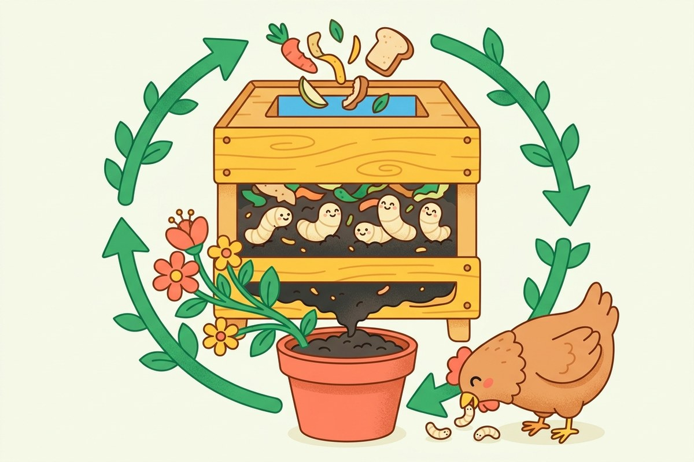

1. Les larves qui mangent les restes
La mouche soldat noire a des bébés très gourmands : ses larves mangent nos épluchures et nos restes de repas en trois jours seulement. À la fin, il reste un super engrais pour les plantes et de la nourriture pour les poules et les poissons. Rien n'est brûlé, rien n'est jeté : c'est une boucle.